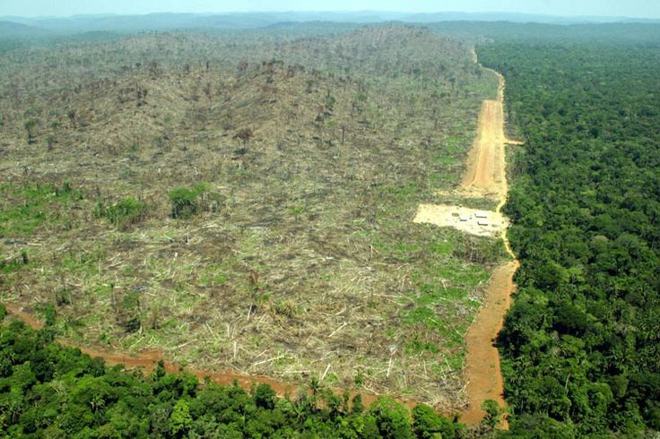

Factory farming puts an immense strain on the earth's natural resources, such as land, water, and fossil fuel. In the United States alone, there are over nine billion animals being raised and slaughtered for human consumption. This results in a vast amounts of waste and greenhouse gases, which in turn pollutes our water, land, and air, resulting in climate change.

Factory farms in the United Sates generate over 1 million tons of waste a day, which is three times the amount generated by the human population of the country. The animal waste is usually stored in huge, open-air lagoons. These can be as big as several football fields, and are susceptible to leaks and spills.
Once the lagoons reach full capacity, farmers will often apply the manure to the surrounding areas in order to avoid paying for waste removal. This results in contaminated water supplies and the omission of harmful gases into the atmosphere when over-applied to the land. These gases in include methane, hydrogen sulfide, and ammonia.

Green house gas directly contributes to global warming. These gases are a result of methane being emitted during the digestion process of the factory farmed animals. Factory farming accounts for 37% of methane emissions, which has more than 20 times the global warming potential of CO2.
The overuse of antibiotics by factory farms also effects our environment. In order to promote faster growth and to compensate for filthy, disease ridden conditions, factory farms give their animals antibiotics. However, 75% of these antibiotics end up undigested in the animals' waste. Once this waste is applied to the land, it then contaminates crops and is ultimately consumed by humans.
Deforestation is also a huge devastating result of factory farming. Around 70% of the Amazon rainforest has been destroyed and is now used to support grazing for factory farm animals.
In order to produce one pound of beef, it takes about 1,581 gallons of water. This has a huge impact on our water supply. Globally, 70% of the world' s available freshwater is being diverted to irrigation-intensive agriculture.